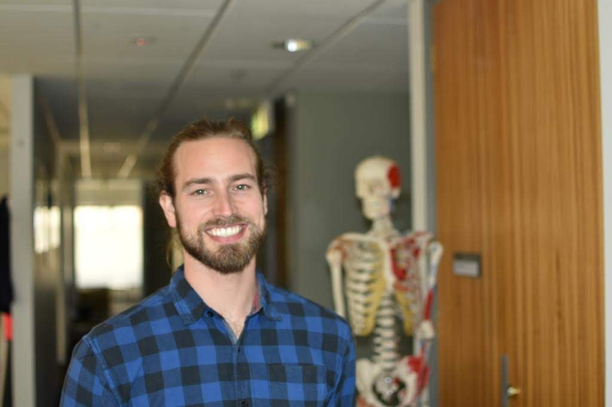

Alumni reflection · original submission
Geoffrey Handsfield
Auckland Bioengineering Institute, University of Auckland
2019 interview · 2020 alumni reflection · 1 minute read
The contributor’s narrative responses from their completed, publication-authorized 2020 EverydayBME submission. Section headings identify the survey themes; they are not reconstructed questions. Roles and plans refer to 2020.

Background and career path
I think post-doc positions may be the lowest point in science! There's a huge leap from being supported by teachers, supervisors, and peers as a graduate student, and then finding yourself as a post-doc where you're pretty much on your own. Maybe it's the crucible that's part of the path to becoming a self-directed researcher, but definitely the toughest period of my career so far.
The international experience
Science may be one of the most universal pursuits available to humans, yet as Americans our scientific training and perspectives are so often local and limited to just a few institutions, states, and within one nation. I was really motivated to get a more global perspective and understand how science is done beyond the U.S.'s borders. On a personal level, getting outside of your comfort zone and challenging yourself with new ways of living and thinking is a really powerful vehicle for personal growth and maturity.
Work and career reflections
Hold yourself to a high standard, but don't stress yourself by being a perfectionist. Everything you do could be made a little bit better, a little more technologically advanced, with code that's a little more elegant; but at the end of the day, you have to put your results out so that others may use them. Don't break your back on the small details ;)